Manual de uso · Gestor de Tickets
Sistema de tickets ITIL de Wintook — guía paso a paso con capturas reales.
1 Conceptos básicos
Cómo acceder
El Gestor de Tickets vive en su propio icono (📋) en la barra lateral izquierda. Al entrar verás el menú del módulo: Todos los tickets, Tablero, Métricas y la configuración. Si no ves el icono, el módulo puede no estar habilitado para tu cuenta — contacta al administrador.
Un ticket registra un caso de soporte asociado a un contacto. Puede enlazarse a una conversación (y desde una misma conversación pueden abrirse varios tickets), o crearse de forma independiente.
Cómo se clasifica un ticket
| Campo | Qué es |
|---|---|
| Tipo de caso | Categoría configurable por cuenta, con color (p. ej. Soporte). |
| Naturaleza del caso (ITIL) | Incidente, Solicitud de servicio, Problema, Cambio o Consulta. |
| Impacto × Urgencia | Determinan automáticamente la Prioridad según la matriz ITIL estándar. |
| SLA | Acuerdo de tiempo de atención; el sistema vigila si está en riesgo o vencido. |
2 El listado de tickets
Es la vista principal (icono de portapapeles en la barra lateral → Todos los tickets). Muestra todos los tickets con sus badges de tipo, prioridad, estado y estado de SLA.
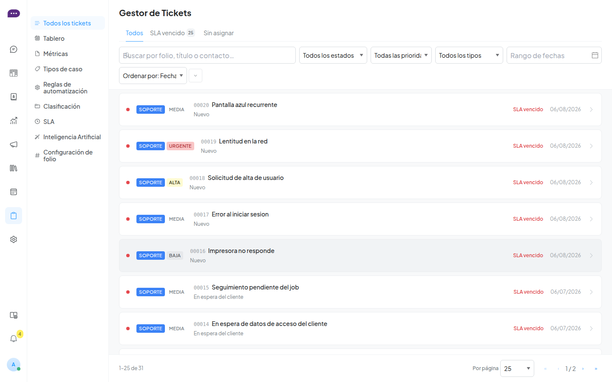
- Búsqueda por folio, título o contacto.
- Filtros por estado, prioridad, tipo y rango de fechas.
- Pestañas rápidas: SLA vencido y Sin asignar destacan lo urgente.
- Clic en cualquier fila para abrir el detalle.
3 Crear un ticket
Desde una conversación, abre el panel del contacto (derecha) y pulsa el botón “Tickets (N)”. Se abre el modal; si el contacto no tiene tickets en proceso, arranca directamente en el formulario de alta.
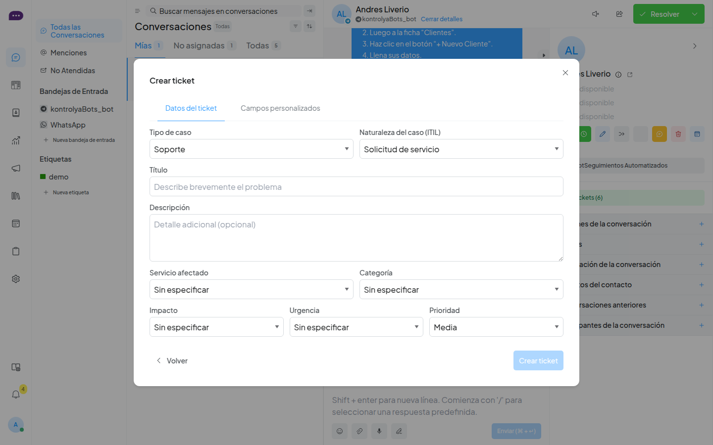
Dos formas de crear un ticket
- Manual — desde el panel del contacto o de la conversación, con el botón de tickets (lo descrito arriba).
- Automática — el bot puede crearlo solo mediante la directiva
@crear_ticketdurante una conversación, sin intervención del agente.
Campos del formulario
- Tipo de caso y Naturaleza del caso (ITIL) — la clasificación.
- Título (obligatorio) y Descripción.
- Servicio afectado y Categoría (opcionales).
- Impacto y Urgencia: al completarlos, la Prioridad se calcula sola y queda bloqueada.
- La pestaña “Campos personalizados” muestra los campos extra definidos para ese tipo de caso.
4 El detalle de un ticket
El detalle se organiza en tres pestañas:
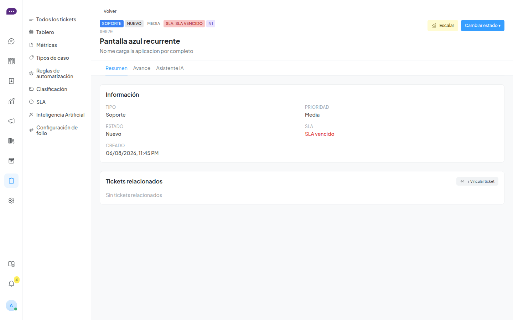
- Resumen — datos clave (tipo, estado, prioridad, SLA, fecha) y tickets relacionados.
- Avance — el recorrido del caso (ver Ciclo de vida).
- Asistente IA — acciones de IA bajo demanda.
Desde la cabecera puedes Cambiar estado y Escalar el ticket (ver Flujo ITIL).
Pestaña “Avance”
Muestra cómo progresa el ticket, en tres subvistas: Recorrido (línea de tiempo), Historial (cada evento registrado) y Ciclo de vida (posición en el pipeline de estados).
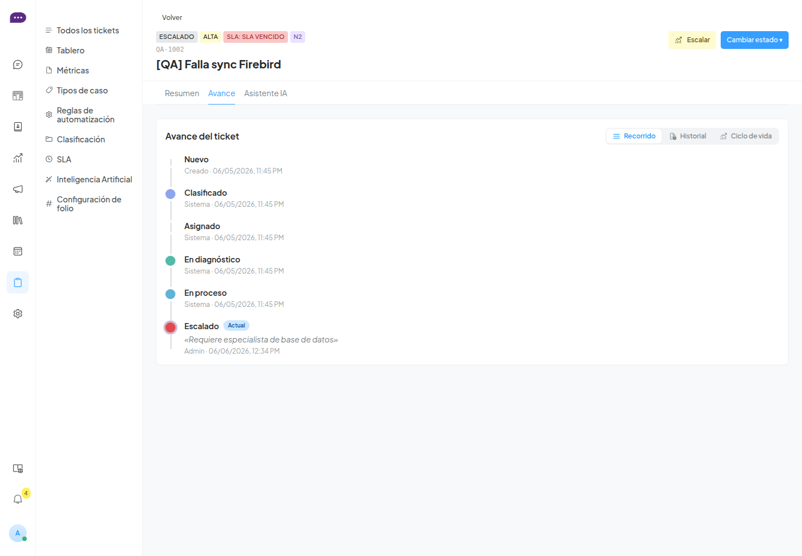
Pestaña “Asistente IA”
Reúne las acciones de IA que puedes lanzar bajo demanda sobre el ticket (requiere la IA activada — ver Inteligencia Artificial):
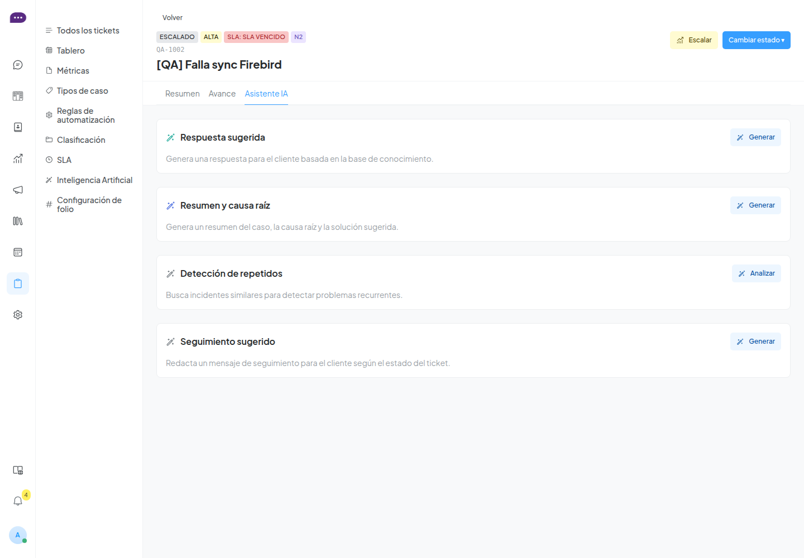
5 El tablero (Kanban)
La opción Tablero muestra los tickets en columnas por estado. Útil para ver la carga de trabajo de un vistazo y arrastrar tickets entre fases.
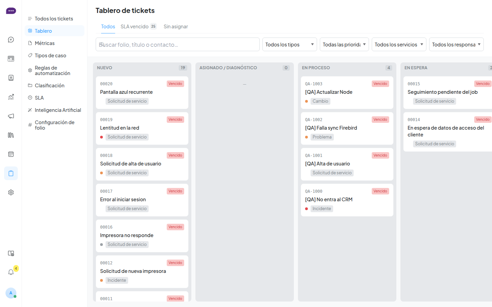
6 Métricas
Panel de indicadores del módulo, con selector de período (7 / 30 / 90 días / Todo).
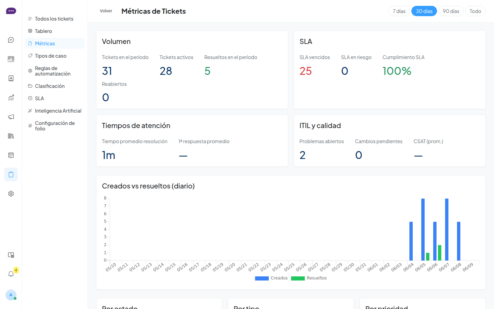
- Volumen: tickets del período, activos, resueltos y reabiertos.
- SLA: vencidos, en riesgo y % de cumplimiento.
- Tiempos: resolución promedio y primera respuesta.
- ITIL y calidad: problemas abiertos, cambios pendientes y CSAT.
- Gráfico Creados vs resueltos y desgloses por estado, tipo y prioridad.
7 Configuración
Desde la barra lateral del módulo se configuran las reglas del negocio.
Tipos de caso
El tipo de caso es la categoría propia de la cuenta con la que se clasifica cada ticket. Cada tipo tiene:
- Nombre y color — para identificarlo de un vistazo (el badge de color que ves en el listado y el Kanban).
- Prefijo — se usa en el folio del ticket (p. ej.
SOP-0001para Soporte). Si no lo defines, se genera de las 3 primeras letras del nombre. - Campos personalizados — datos extra propios de ese tipo (ver abajo).
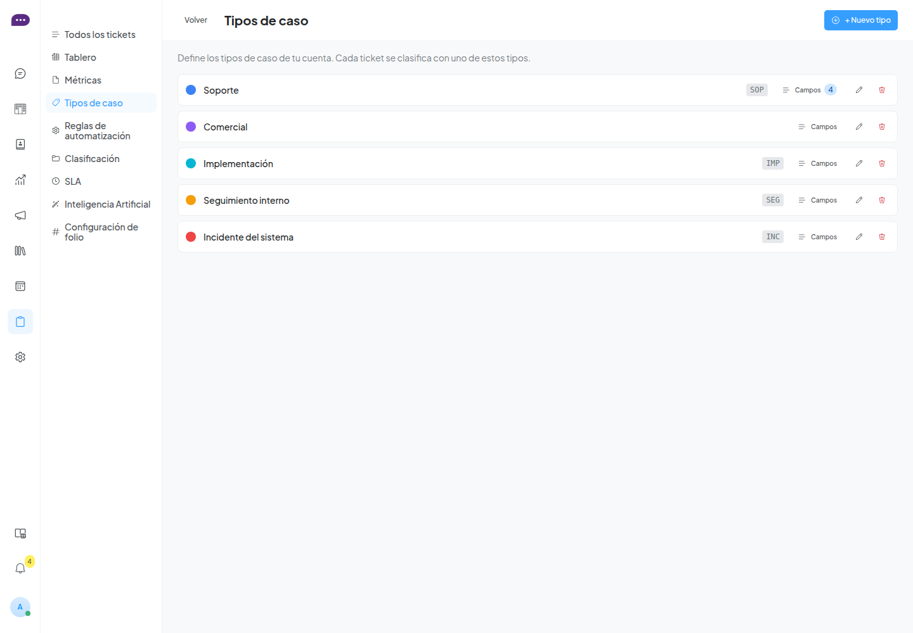
Campos personalizados — qué son y por qué
No todos los tipos de caso necesitan la misma información. Un ticket de Soporte quizá necesita el número de serie del equipo; uno de Implementación, la fecha de go-live. En vez de llenar el formulario base de campos que sobran, cada tipo define sus propios campos.
¿Por qué usarlos?
- Capturas datos estructurados desde el inicio, sin perderlos en el texto libre de la descripción.
- Estandarizas qué se pide para cada tipo de caso (y puedes marcar campos como obligatorios).
- Quedan asociados al ticket para consultarlos, reportar o automatizar después.
Cómo definirlos
En el listado, pulsa “Campos” en la fila del tipo. Se abre el editor:
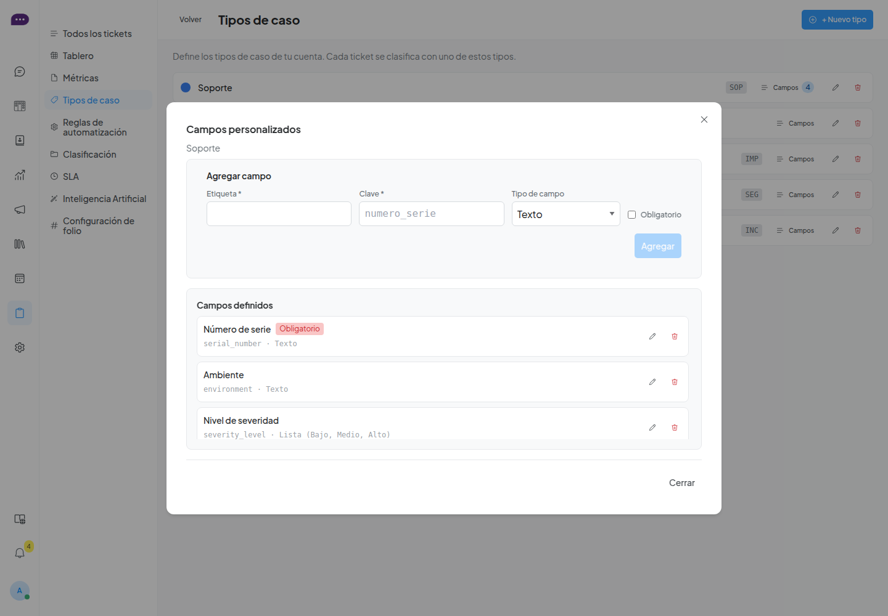
| Dato del campo | Qué pones | Por qué |
|---|---|---|
| Etiqueta (obligatorio) | Lo que ve el agente, ej. “Número de serie”. | Texto visible en el formulario del ticket. |
| Clave (obligatorio) | Identificador técnico en minúsculas, ej. serial_number. | Es la llave con la que se guarda el valor; única por tipo y no debería cambiar. |
| Tipo de campo | Texto · Número · Fecha · Lista · Casilla. | Define qué control se muestra y qué se puede capturar. |
| Obligatorio | Casilla. | Si se marca, no se puede crear el ticket sin ese dato. |
Los 5 tipos de campo
| Tipo | Para qué sirve |
|---|---|
| Texto | Texto libre corto (nombres, códigos, referencias). |
| Número | Valores numéricos (cantidades, versiones). |
| Fecha | Selector de fecha (vencimientos, go-live). |
| Lista | Desplegable con opciones predefinidas (ej. Bajo/Medio/Alto). Requiere al menos una opción. |
| Casilla | Sí/No (booleano), ej. “¿Requiere visita?”. |
Dónde se usan
Al crear un ticket de ese tipo, los campos aparecen en la pestaña “Campos personalizados” del modal. Los valores capturados quedan guardados en cada ticket, junto al resto de sus datos.
Reglas de automatización
Una regla es un “SI… ENTONCES…”: si un ticket cumple ciertas condiciones, el sistema ejecuta unas acciones automáticamente (asignar, cambiar prioridad, escalar…). Se evalúan cuando el ticket se crea o cambia, sin intervención manual.
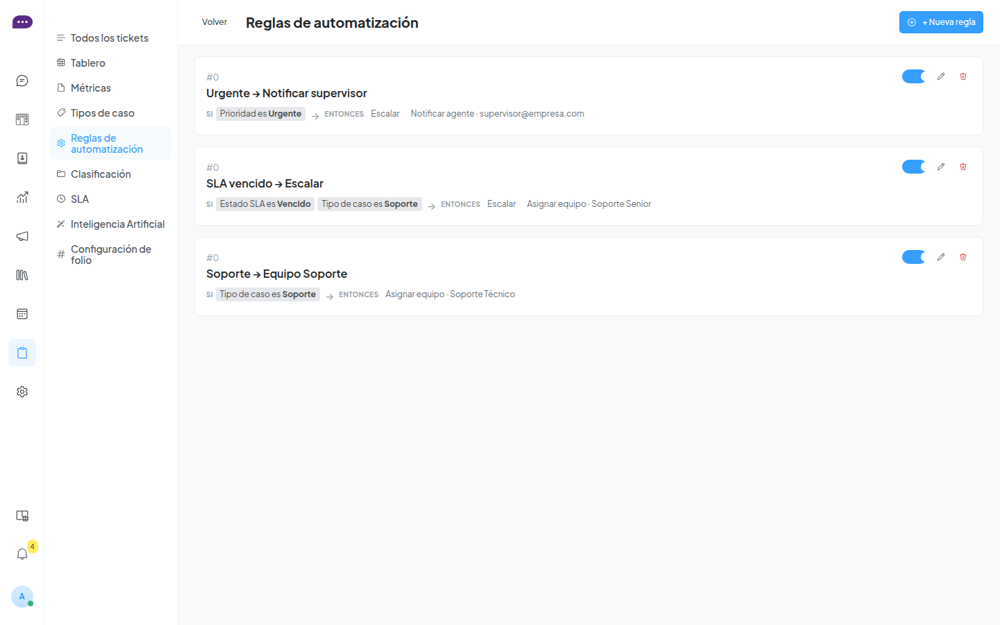
Cómo capturar una regla
Pulsa “+ Nueva regla”. El formulario tiene tres partes:
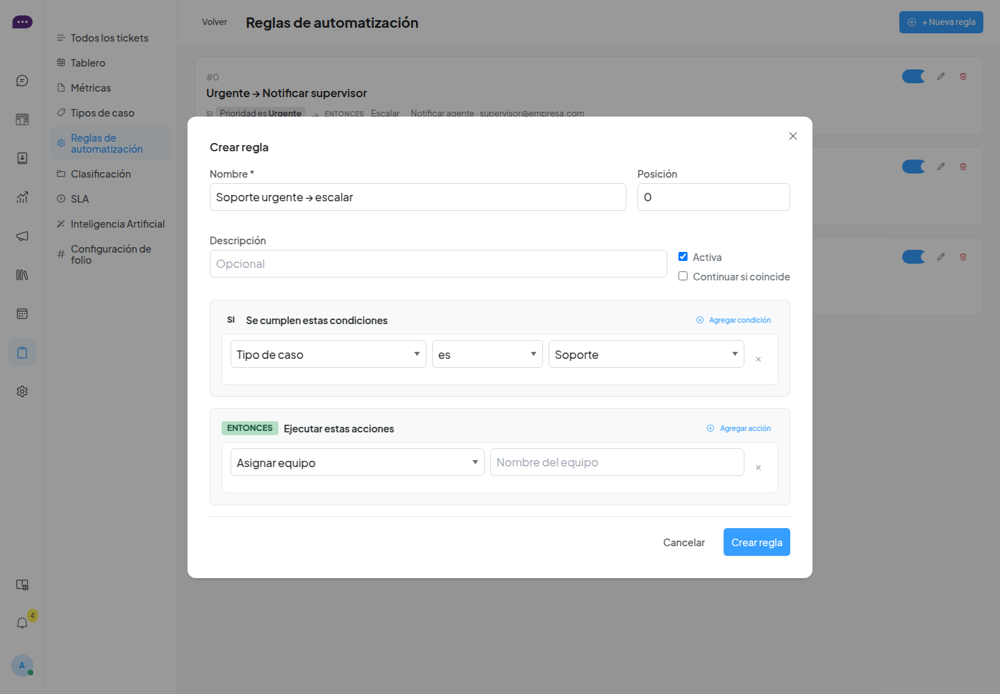
1. Datos generales
| Campo | Qué pones | Por qué |
|---|---|---|
| Nombre (obligatorio) | Texto descriptivo, ej. “Soporte urgente → escalar”. | Para identificarla en el listado. |
| Posición | Número (menor = se evalúa antes). | Define el orden de evaluación, clave por la regla de la cascada (ver abajo). |
| Descripción | Nota opcional. | Documentar para qué sirve. |
| Activa | Casilla. | Apagar la regla sin borrarla. |
| Continuar si coincide | Casilla. | Por defecto, al primer match la evaluación para. Márcala para que sigan evaluándose las reglas siguientes (encadenar varias). |
2. Condiciones (SI)
Cada condición es campo · operador · valor. Si hay varias,
deben cumplirse todas (Y lógico). Si no agregas
ninguna, la regla aplica a todos los tickets.
| Campos disponibles | Operadores |
|---|---|
| Tipo de caso · Naturaleza ITIL · Impacto · Urgencia · Servicio afectado · Categoría · Origen · Prioridad · Estado · Estado SLA · Contenido del mensaje · Minutos sin respuesta | es · no es · contiene · ≥ · ≤ · está en lista · no está en lista |
3. Acciones (ENTONCES)
Lo que se ejecuta cuando la regla coincide (puedes encadenar varias):
- Asignar responsable / Asignar equipo — enruta el ticket.
- Cambiar prioridad / Cambiar estado.
- Escalar — sube de nivel (N1 → N2 → N3), opcionalmente a un equipo.
- Cerrar ticket · Notificar agente.
Cómo se evalúan (la cascada)
- Se recorren las reglas activas, ordenadas por posición (menor primero).
- La primera cuyas condiciones se cumplan ejecuta sus acciones.
- Y ahí para… salvo que tenga marcado “Continuar si coincide”, en cuyo caso sigue con las siguientes.
- Soporte → Equipo Soporte: SI tipo de caso es Soporte → asignar equipo Soporte Técnico.
- SLA vencido → Escalar: SI estado SLA es Vencido Y tipo es Soporte → escalar + asignar a Soporte Senior.
- Urgente → Notificar: SI prioridad es Urgente → escalar + notificar al supervisor.
SLA
Un SLA (Acuerdo de Nivel de Servicio) es el compromiso de cuánto tiempo puede tardar el equipo en atender un ticket. Aquí defines políticas que fijan ese tiempo, y el sistema vigila automáticamente cada ticket: lo marca a tiempo, en riesgo o vencido.
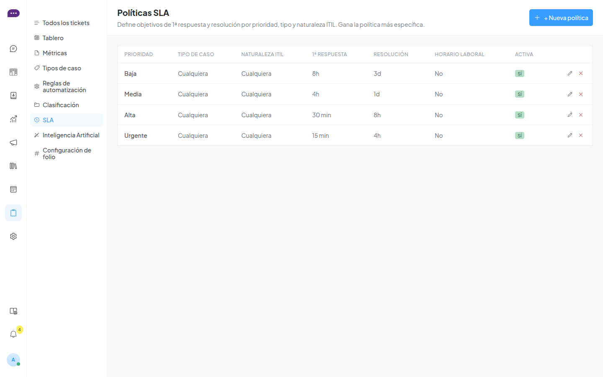
Los dos objetivos de tiempo
Cada política puede fijar uno o ambos (al menos uno es obligatorio):
- 1ª respuesta — máximo para dar la primera respuesta al cliente. Mide la rapidez en reaccionar.
- Resolución — máximo para dejar el ticket resuelto. Mide la rapidez en solucionar.
Mientras el ticket no tiene primera respuesta, el reloj se compara contra el objetivo de 1ª respuesta; una vez respondido, pasa a medirse contra el de resolución.
Cómo capturar una política
Pulsa “+ Nueva política” y completa el formulario:
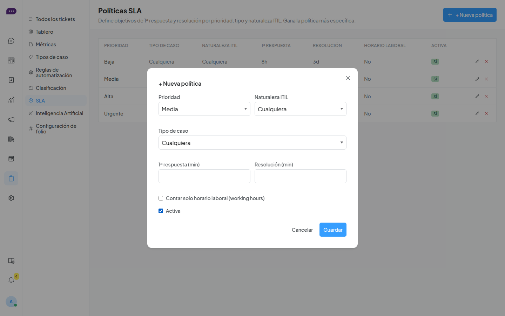
| Campo | Qué pones | Por qué |
|---|---|---|
| Prioridad (obligatorio) | Baja, Media, Alta o Urgente. | Es el eje principal: a más prioridad, menos tiempo. Una política siempre aplica a una prioridad. |
| Naturaleza ITIL | Una naturaleza concreta o “Cualquiera”. | Permite que, p. ej., un Cambio urgente tenga un tiempo distinto a un Incidente urgente. |
| Tipo de caso | Un tipo concreto o “Cualquiera”. | Permite afinar por categoría de la cuenta (p. ej. “Soporte” vs “Facturación”). |
| 1ª respuesta (min) | Minutos. Vacío = sin objetivo de primera respuesta. | Define el compromiso de reacción. Ej.: 15 = 15 min. |
| Resolución (min) | Minutos. Vacío = sin objetivo de resolución. | Define el compromiso de cierre. Ej.: 240 = 4 h, 1440 = 1 día. |
| Contar solo horario laboral | Casilla. | Si se marca, el reloj solo corre en horas hábiles (no cuenta noches/fines de semana). |
| Activa | Casilla. | Permite desactivar una política sin borrarla. |
60=1 h · 240=4 h · 480=8 h
(jornada) · 1440=1 día · 4320=3 días.
“Gana la más específica”
Un ticket puede encajar en varias políticas a la vez. El sistema elige siempre la más específica que coincida, en este orden:
- Tipo de caso y naturaleza ITIL definidos (la más concreta).
- Solo tipo de caso definido.
- Solo naturaleza ITIL definida.
- Solo prioridad (las genéricas “Cualquiera / Cualquiera”).
Si no hay ninguna política que aplique, el sistema usa unos valores por defecto según la prioridad.
Cómo se ve el cumplimiento
Según el tiempo transcurrido frente al objetivo, el ticket muestra:
| Estado | Cuándo |
|---|---|
| A tiempo | Va por debajo del 80 % del tiempo objetivo. |
| En riesgo | Llegó al 80 % del tiempo objetivo (señal de alerta temprana). |
| Vencido | Alcanzó o superó el 100 % del objetivo. |
8 Configuración del folio
El folio es el identificador legible de cada ticket
(lo que ves como SOP-0001). Aquí defines su formato y cómo
se numera.
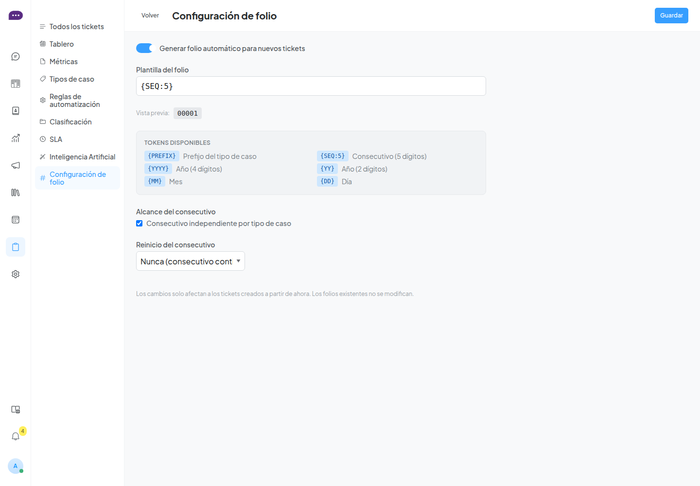
La plantilla y sus tokens
Escribes una plantilla combinando texto fijo y tokens entre llaves. La vista previa muestra al instante cómo quedaría. Tokens disponibles:
| Token | Qué inserta |
|---|---|
{PREFIX} | Prefijo del tipo de caso (ej. SOP). |
{SEQ} / {SEQ:5} | Consecutivo. Con :n lo rellena a n dígitos (ej. {SEQ:5} → 00001). |
{YYYY} / {YY} | Año, 4 o 2 dígitos. |
{MM} / {DD} | Mes / día (2 dígitos). |
{PREFIX}-{YYYY}-{SEQ:5} produce
SOP-2026-00001.
Alcance y reinicio del consecutivo
| Opción | Qué hace | Por qué |
|---|---|---|
| Consecutivo independiente por tipo | Activado: cada tipo de caso lleva su propia numeración (Soporte 1,2,3… y Comercial 1,2,3…). Desactivado: un solo consecutivo global. | Útil si quieres numerar por área en vez de un correlativo único. |
| Reinicio del consecutivo | Nunca · Diario · Mensual · Anual. | Reinicia la cuenta a 1 al cambiar el período (combínalo con {YYYY}/{MM} para que el folio no se repita). |
9 Inteligencia Artificial
La IA puede asistir en varias tareas del ticket. El diseño es configurable por acción: tú decides, para cada una, si está apagada, si sugiere (propone y un agente aprueba) o si se aplica automáticamente.
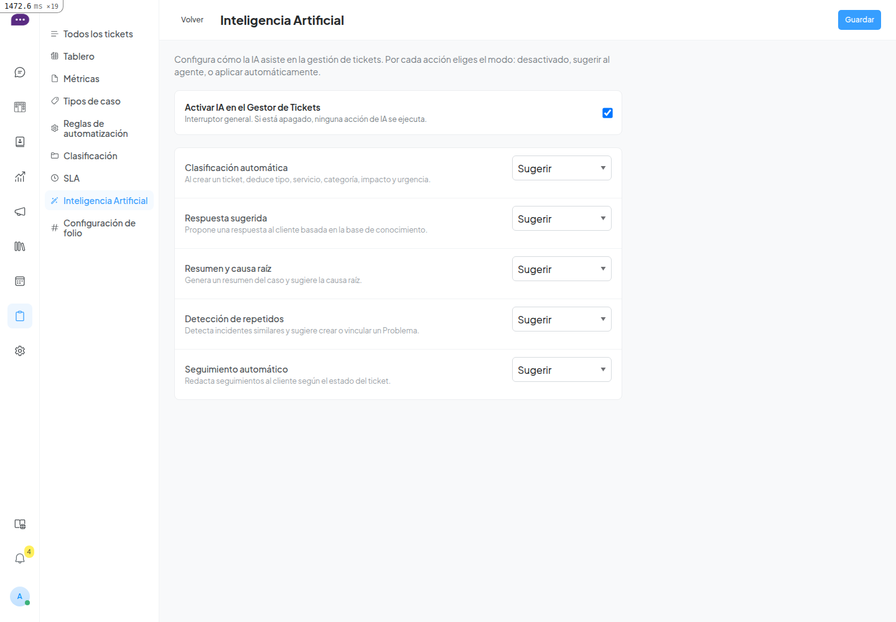
El interruptor general
“Activar IA en el Gestor de Tickets” es el interruptor maestro: si está apagado, ninguna acción de IA se ejecuta, sin importar su modo individual.
Los tres modos
| Modo | Qué hace |
|---|---|
| Desactivado | Esa acción no corre. |
| Sugerir | La IA propone y un agente decide si aplicar o descartar. Recomendado para empezar. |
| Automático | La IA aplica el resultado directamente, sin intervención. |
Las acciones disponibles
| Acción | Qué hace |
|---|---|
| Clasificación automática | Al crear un ticket, deduce tipo, servicio, categoría, impacto y urgencia. |
| Respuesta sugerida | Propone una respuesta al cliente basada en la base de conocimiento. |
| Resumen y causa raíz | Genera un resumen del caso y sugiere la causa raíz. |
| Detección de repetidos | Detecta incidentes similares y sugiere crear o vincular un Problema. |
| Seguimiento automático | Redacta seguimientos al cliente según el estado del ticket. |
10 Ciclo de vida, estados y cierre
Cada ticket avanza por una serie de estados. Solo se permiten transiciones válidas (no puedes “saltar” pasos arbitrarios), y cada cambio queda registrado en el Avance.
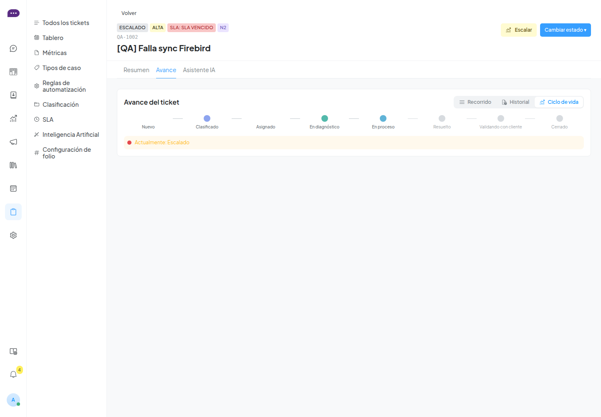
Los estados
| Estado | Significado |
|---|---|
| Nuevo | Recién creado, sin clasificar. |
| Clasificado | Ya tiene tipo/naturaleza/prioridad. |
| Asignado | Tiene responsable o equipo. |
| En diagnóstico | Se está investigando. |
| En proceso | Se está resolviendo. |
| En espera (del cliente / de tercero / interna) | Pausado esperando a alguien. Pausan el reloj de SLA. |
| Escalado | Subido de nivel (ver abajo). |
| Resuelto | Solucionado, pendiente de validar. |
| Validando con cliente | Confirmando con el cliente antes de cerrar. |
| Cerrado | Finalizado (terminal). |
| Cancelado | Anulado sin resolver (terminal). |
Cierre del ticket
Un ticket no se puede cerrar sin documentar. Al cerrarlo se exigen tres datos:
| Dato | Qué es |
|---|---|
| Tipo de cierre | Resuelto · Duplicado · No aplica · Cancelado. |
| Causa | Por qué ocurrió el caso. |
| Solución | Qué se hizo para resolverlo. |
11 Flujo ITIL avanzado
Escalamiento (N1 → N2 → N3)
El botón “Escalar” de la cabecera sube el ticket de nivel cuando un equipo no puede resolverlo: N1 (primer nivel) → N2 → N3 (máximo). Puede reasignarlo a otro equipo y marca el estado Escalado. El nivel actual se ve como badge (N1/N2/N3) en la cabecera.
Problema
Un ticket de naturaleza Problema suma una tarjeta “Detalles del problema” con causa raíz y solución temporal (workaround). Cuando se resuelve, su solución puede propagarse a los incidentes vinculados, cerrándolos en cascada.
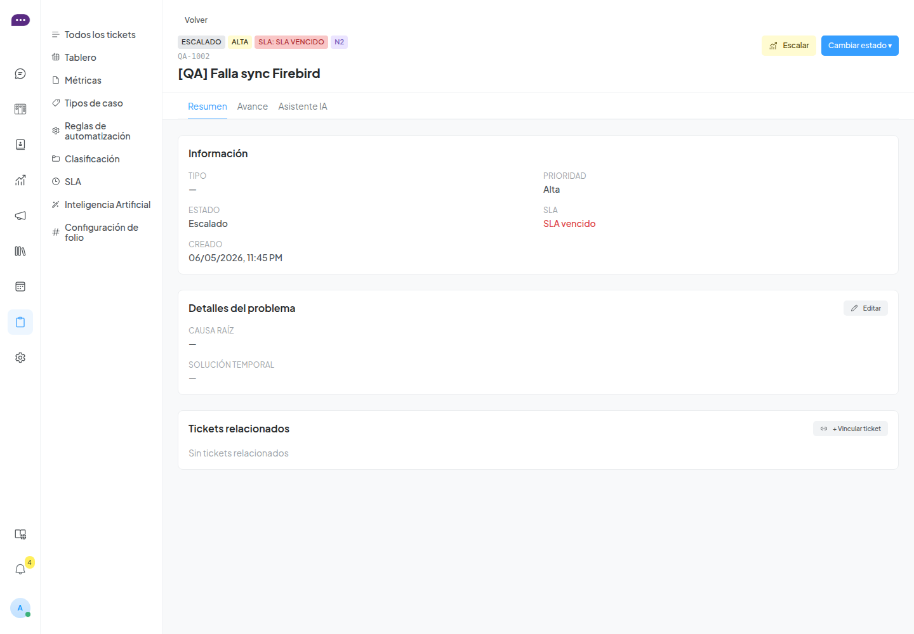
Cambio
Un ticket de naturaleza Cambio maneja datos de gestión de cambios (nivel de riesgo, plan de rollback, ventana programada). Si el cambio requiere aprobación, no puede pasar a “En proceso” hasta que sea aprobado — un control para que no se ejecuten cambios sin visto bueno.
Relaciones entre tickets
Desde el Resumen, “+ Vincular ticket” conecta este ticket con otro. Sirve para agrupar duplicados y para enlazar incidentes con su problema o cambio de origen.
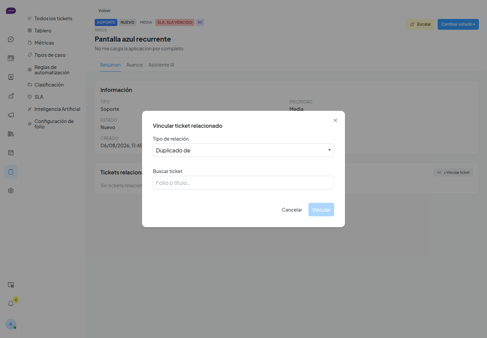
| Tipo de relación | Significado |
|---|---|
| Duplicado de | Este ticket repite a otro. |
| Padre / hijo | Jerarquía entre tickets. |
| Incidente → Problema | El incidente pertenece a un problema. |
| Incidente → Cambio | El incidente se asocia a un cambio. |
| Cambio → Problema | El cambio resuelve un problema. |
12 Glosario ITIL
| Término | Qué significa |
|---|---|
| Incidente | Algo que no funciona y afecta al servicio. |
| Solicitud de servicio | Una petición planificada (alta de usuario, acceso…). |
| Problema | La causa de fondo de uno o varios incidentes. |
| Cambio | Una modificación controlada del entorno. |
| Consulta | Una duda o pregunta del cliente. |
| SLA | Compromiso de tiempo de atención (1ª respuesta / resolución). |
| Impacto / Urgencia | Cuánto afecta / qué tan pronto se necesita. Juntos derivan la prioridad. |
| Prioridad | Orden de atención (Baja / Media / Alta / Urgente). |
| Escalamiento | Subir el ticket a un nivel de soporte mayor (N1→N2→N3). |
| Folio | Identificador legible del ticket (ej. SOP-0001). |
| Causa raíz | El motivo de fondo que origina el problema. |
| Solución temporal | Apaño que restablece el servicio mientras se resuelve la causa raíz. |